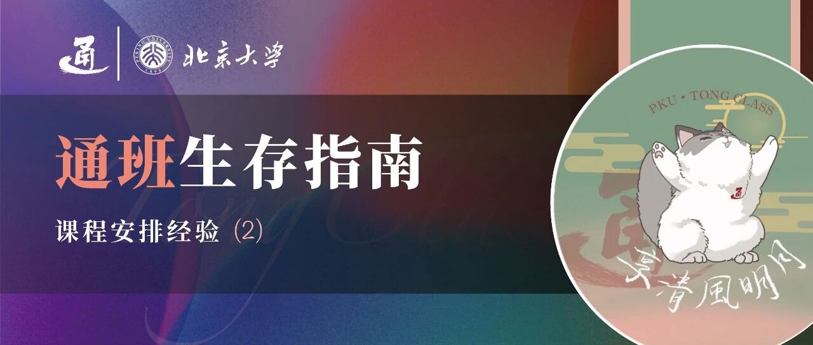

通班生存指南 | 课程安排经验（2）


本期概要
了解了上次推送的一些选课“大纲”后，同学们可能会希望看到更具体的经验，因此本期分享主要是23级及更高年级的学长们的选课轨迹杂谈，希望能为大家提供更多元化的参考。
学长学姐们的经验
📝 23级 李嘉豪
我大一的课表安排比较正常，上学期学3A，下学期学软设、ai引论、信概统和高数a下。大二上的课表比较特别，秋季学期没有上ics和数算，选了近物导、ML、NLP、离散，原因是高中时有一些物理竞赛基础，并且NLP对眼下的科研项目有很多帮助。大二下的时候因为算分之后会改成3学分(编者注：本学年春季开始就是3学分了)就先没有选，近物导II也感觉力有不逮，所以选了ai中的数学和多智能体系统，感觉比较有收获。
📝 23级 庞乐熙
大一选课几乎都是跟着培养方案选的，通班培养方案大一的课程有很多数学基础课(比如高数线代)，难度偏大。大二上的时候开始参与科研项目，因此选课时就避开了一些培养方案里任务量比较大的课，同时选了一些给分高体验好的通识课，比如音乐与数学、中级微观经济学（编者注：25级不计算总绩点，大家没必要去刷分了，以培养方案要求和兴趣为主）；以及一些跟我科研项目相关的专业课和选修课，比如机器学习和生成模型基础（编者注：该课由信科开设，虽然不在培养方案里，但是很不错）。
但是这学期选课有点过于自由了，所以我大二下（AI数、多智能体、系统实践II）和大三上（近物导I、cv、nlp等）又多选了一些培养方案的课程，同时也额外选了一些自己喜欢方向的课程来平衡。可能很多人的选课轨迹会跟我一样，大一完全根据培养方案选课，然后因为想探索更多内容就在大二的时候选很多培养方案之外的课，大三又回到一个比较合理的范围。给大家的建议就是不用特别循规蹈矩完全选培养方案的课，因为这些课每学期大概也就10+学分，当然也不要完全不选培养方案的课（因为首先要保证自己能顺利毕业hhhhh）。
可以每学期选10+学分的培养方案的课再选10学分左右的培养方案之外自己感兴趣的课，这样可能自己上学的体验会更好一点，也能学到更多自己感兴趣的知识。当然如果大家有科研项目的话，可以稍微少选点课，控制在20学分以下，15学分左右可能比较舒适（当然这里指的是任务量正常/比较大的课，水课不算）。除非你对自己学习能力和时间利用能力特别自信，觉得自己可以同时处理好大量的课程作业+考试以及科研上的任务，否则都不建议选太多额外课程。
📝 23级 匿名同学
大一一年的专业课选课和培养方案完全一致。但是大一春有一门专业课和一门思政选必比较崩，因为暂时不能确定未来的选择，大二开学时就选了很多刷分课往回拉一下绩点，同时尽量减轻自己专业课的压力。
下面把选过的课列一下，很激进（贬义），请大家当作反面教材orz：
大二上：近物导I（中期退课）、计算神经科学导论（编者注：3学分，已停开，由2学分的NeuroAI替代）、离散数学基础、人工智能系统实践I、中级微观经济学、音乐与数学、公共初级日语。
大二下：AI数、数值分析、信息论、计算神经科学和类脑智能领域前沿进展、CTAW、游泳、公共中级日语、简量、核科学。
其实如果效率不太高的话，选这些课加上科研就已经有点满了（不过是那些通识课的“杂事”偏多）。赶在计神导停开前修课，并且在公初日和公中日还有三个平行班时比较轻松地选上课（满足个人生活中实质上的“第一外语”的需要并且刷到分x），还是很幸运的。这一年的主线就是探索计算神经科学，争取入门科研，同时上好专业必修和选修中的数学课。
然而，这样选课很明显的坏处是虽然大二比较安逸地探索了一年，但是接下来两年压力就会非常大（因为上学期我突发奇想报名了 AI+心理认知 本科生跨学科项目，又平添21学分的课程，如果没有这些课的话其实就还好）。因此最大的忠告是，大学四年弹指一挥，开始的几个学期如果有能力的话不必循规蹈矩，在保住必修课的基础上多做一点探索（不必局限于培养方案，信科热门课程比如cv导（春）、ai编（秋）、生成模型（秋）都推荐了解后决定是否尝试，如果当学期任务紧可以只旁听）或者把后面的专业课提前修一两门。否则懵懂地到了中高年级才发现自己有很多感兴趣的课，而迫于培养方案的压力不得不舍弃一些，就显得有些窘迫。此后，选课上可调整的余地越来越小，而变数常在，事情未必还能如当初狂扔必修爽上“选修“时所幻想的那样，只是“苦一苦将来的自己”。
借此机会感慨一下，上面提到的那个“AI+心理认知”今年是第一次招生，如果它早一年招生，或许提前得知消息的我会把规划中“放过自己“的侥幸给剔除，获得一个更平均、更健康的本科学习经历。这个例子也是现身说法，向大家展示更广义的那些机会和资源并非总是远远地等你规划好地图一步步到达，它们偶然会出现在偏离你前进方向的地方。想要充分利用它们，不仅需要有准备，还要有一定的余力。
（当然，如果你不喜欢上贵校的线下课，而是喜欢利用线上资源自学，那你的安排就灵活得多）
细节上一些碎碎念：
尽可能把专业必修课集中在前面修完。一个较少被提到的原因是，随着高考的远去，我们贯彻“题海战术”和规律性、高强度学习的能力有概率会衰退，科研任务的加入也会某种程度上让我们从课内“分心”，因此有些课（比如那些难度高或期末考试结课的课）越晚选可能就越力不从心，不如一鼓作气把基础打牢，后面留出富裕供自己发展。本人如今才悟到这一点，不得不面对大三上选近物导、数算、ML、cv、nlp的天崩开局，深感懊悔。
本人大部分时候都会到课堂上听课，用平板记笔记，强迫自己同时关注授课的思路和细节。个别现场听课效率极低的课会考虑听回放或看课本自学。自己的体验是，看回放时容易分神，或者被老师讲话中非主干处感觉”奇怪“的地方绊住，一通折腾下来既没有自己搞明白，又没法问早在一周前就结束了这堂课的老师，还耽误了时间，对于一个希望基本掌握课程内容的同学来说是不太有效率的选择。
另外，自己大二上没（提前）修ML（因为和计神导撞了）、大二下没（提前）修多智能体的另一个影响是，身边熟悉的同学已经提前把它们修完，没有”搭子“跟我一起在大三再一起修这些课，不得不主动出击去social。很多专业课或通识课上都可以找选课的通班同学合作，双赢的基础上增强联系，形成互帮互助的“搭子”。
7426718 是我上学期发的测评洞，里面也有过去其他学期的一些课程的测评，感兴趣的可以参考一下。
📝 21级 尹思源
我是典型的高考生，没有任何竞赛背景，在大学之前也没有丝毫的编程经验。
在必修课上，我的选课轨迹基本按照培养方案按部就班进行。我个人在大一大二学一些基础课比如计概A，高数A，ics，算分的时候，会比大三大四学NLP，CV，CoRe这些专业课更加吃力一些。拥有3A课程的大一秋季学期可能是我本科课程学习最艰难的一个学期。一方面，3A课程着实是有难度的，相比于高中，我的精力又分散了许多。另一方面，初入燕园，还没有适应大学课程的节奏，不善于向学长学姐求助。身边的同学也有类似的感受。在大一上遇到困难的同学不必气馁，不要失去信心。后来在我逐渐明白燕园的生存法则后，情况便改善了很多。大三大四通班的专业课很多是以大作业的形式进行考核，再加上老师人很nice，助教是通班的高年级学长学姐，总体上给分会比较慷慨。
在选修课（3-1，3-2模块）上，培养方案给通班同学极大的自由。我推荐大家选人工智能研究院开设的一系列人工智能相关课程，可以提供和其他学科交叉的视野，给分也十分不错。不过选某门特定的课之前，建议多去了解课程的相关测评或者找选修过的学长学姐询问相关信息，选课的时候可以拉着比较熟的同学一起组队。我本科选修了基于深度学习的内容生成原理、计算神经科学导论以及后续的计算神经科学前沿进展等。人工智能研究院经常会有新开的课程，上课的同时还能参与到课程的建设过程，会收获很多知识之外的东西。
我的选课与培养方案不同的一点是，近现代物理导论被我放在了大四学期，主要出于两个原因：1、物理课和培养方案中其他课程相关性不高，放在大四也不会影响保研等事项；2、担心绩点，对于我这种非物理竞赛的同学，在物理课上花费很大的精力也有可能得到很低的分数，而且大二也会有其他需要花费时间和精力的课程如ics。我也很推荐大家把物理课放到大四，只需要注意大四不要挂科。
对于课程的学习方式，能够到教室认真上课当然是最好的。相比于录播课程，去教室更有交互感，遇到不明白的地方可以随时提出问题。这相比于用三个小时开二倍速看原时长两个小时的录播课效率更高。除了平时的学习，考前的复习是非常关键的。我喜欢在35楼地下室与两三个同学一起复习，分享资料，互相讲解。从概率统计到ics，从算分到机器人学概论，在35楼下的一个个深夜，不仅我的绩点得到了拯救，而且我和通班同学也在这些时光中建立了珍贵的友谊。
在通班的建设过程中，培养方案也在不断完善，变得更加合理，相信同学们也能更好地增长知识和才干。
📝 23级 李鉴哲
先介绍一下个人的情况：纯粹的高考生，无任何竞赛背景，对交叉学科较为感兴趣，生命科学双学位选手。
相信希望在大学4年中选修双学位/双专业/辅修的同学有很多，但是也会困于平时的课程压力+科研压力+课余生活，在此分享一些我自己的课程安排经验。
在课程选择上，我基本上按照培养方案进行选课。大一上为3A，大一下为概统+AI引论+高数+软设+生理学（生双专业课）+cv导论（王鹤老师，旁听）。大家也可以利用元培选课的优势，在课程安排还不算紧凑的时候，可以在大一选修一些对应辅双的课进行体验。同时对于一些风评极好，但是不在培养方案内的课程，比如cv导论，可以通过旁听进行学习。cv导论确实给了我相比AI引论更多关于deep learning和一些engineering的认识。
大二上我选修了ics+近物导+机器学习+数算A+计算机视觉（王鹏帅老师）+AI中的编程+实践I+生物化学+神经动物行为学。从通班专业课的角度，没有选择离散的原因是自认为对数学不是特别擅长。不过肉眼可见大二上的专业课压力过大导致最后数算A退课，对后面算分影响也较大，而且一些不算毕业学分的专业课也确实会平添不少毕业压力，在此还是提醒大家衡量好知识和毕业的学分压力。不过整体上对知识的收获是很大的，一是学习了一些前沿的CV内容（这可能是朱老师开设的cv涉及较少的），一部分是对cuda编程有了一定的认识，也对未来的科研方向选择有了进一步的看法和认识。
大二下我选修了AI中的数学+近物导+系统生物学等一系列生科双学位课程（具体可参考本人测评洞7553258）。这里是考虑到双学位完成的进度问题，以及科研上的要求。也是在交叉课程的学习上，让我明确了未来的科研方向与导师的选择。
相比较大多数同学，比较不同的是我连着选了近物导上下，虽然确实给我的绩点带来了一些打击，但是我依然觉得较为值得。对这门在通班争议比较大的课，我有一些个人看法。很多同学觉得学AI不需要学物理，因为在科研里用不到物理学的那些公式、定律。我觉得恰恰相反，想做好的AI研究，或者说真正走在创新前沿而不是堆trick的领域的话，物理应该是必不可少的。最直白的，朱老师、李飞飞等等很多学者都是物理出身。从抽象的看，物理学是探索世界，并尝试用数学语言描述世界，对世界进行建模的过程。而AI做的是用计算的方式模拟智能，同样是把目标用数学语言进行建模后实现为代码。因此这个“建模”的思维和想法，都是可以在物理的学习中得到锻炼的。等某一天，发现自己在科研过程中遇到的数学证明，和几个月前学习的连续性方程形式一样，便会感觉到学习的乐趣。
综上所述，选课的时候无非在做几个trade off，平衡好课程压力，毕业的学分压力、对科研有用的有价值的课程与自身兴趣所在，长期来看不厚此薄彼即可。
撰稿 | 李嘉豪 庞乐熙 尹思源 李鉴哲
封面 | 严绍恒
排版 | 张兆一 严绍恒